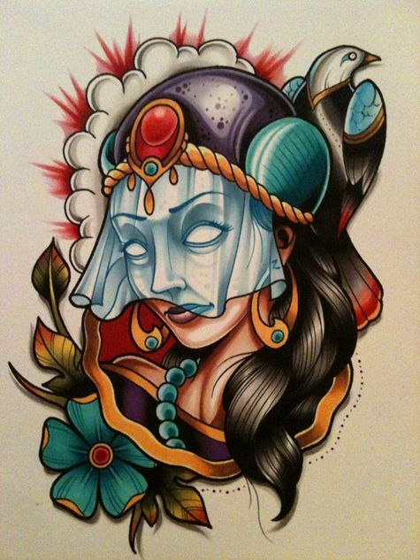
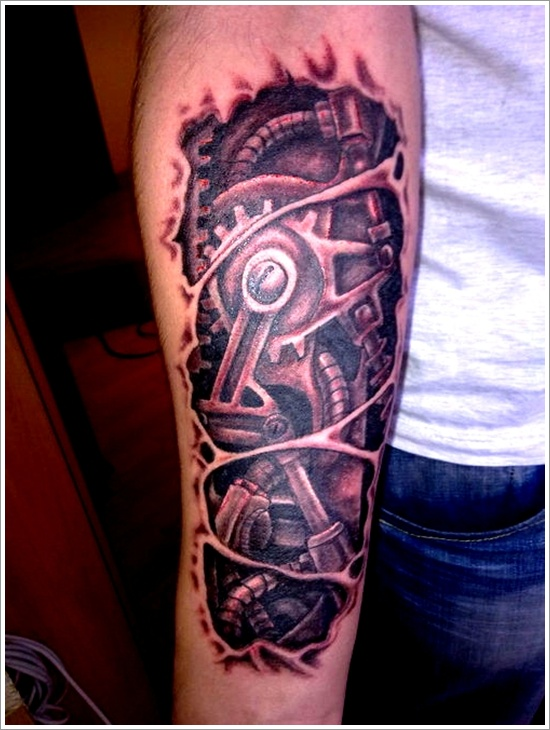
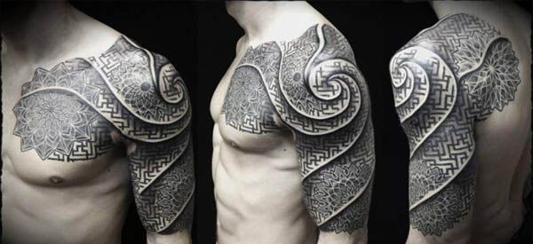
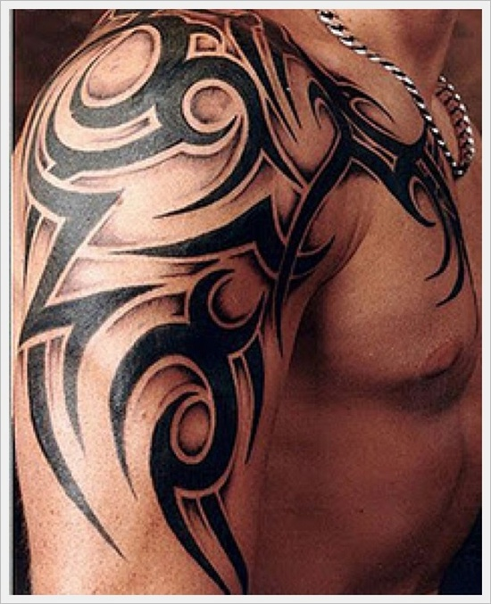
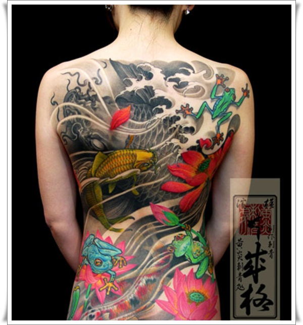
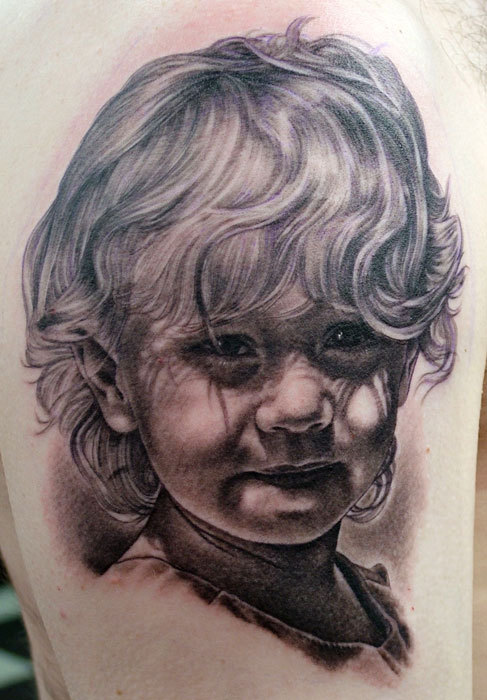
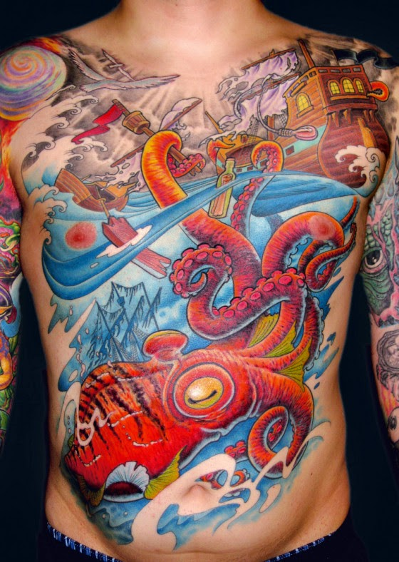
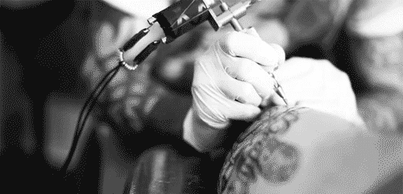

El arte de tatuar se remonta en el tiempo más lejos de lo que la mayoría de la gente piensa. Los egipcios ya conocían y practicaban la técnica del tatuaje hace 3000 años. Se sabe que ya que desde la XI dinastía egipcia se practicaba el arte del tatuaje. Uno de las más famosas momias tatuadas Amunet, una sacerdotisa de la diosa Hathor, en Tebas. Se le observaron varios líneas y puntos tatuados sobre su cuerpo.
En la Momia de Asecond también se encontraron estos mismos modelos, pero además tenía punteada su región púbica más baja. Las evidencias hasta la fecha sugieren que en el antiguo Egipcio este arte fue restringido a las sacerdotisas. La prueba de que el tatuaje ha convivido desde siempre con el hombre se encontró en 1991 en un glaciar situado en la frontera entre Austria e Italia. Allí apareció congelado un cazador neolítico de hacía 5300 años, con la espalda y rodillas tatuadas.
En la foto de la derecha se puede ver un segundo "hombre de hielo" encontrado en Siberia, se cree que murió hace 2500! En él se podía observar un tatuaje en el hombro. Este último puede visitarse en el museo de Moscú. El tatuaje fue reintroducido en la sociedad occidental por los expedicionarios ingleses dirigidos por el Capitán Cook en su vuelva de Tahití en 1771. Esto explica la natural asociación que ha prevalecido hasta nuestros días entre los tatuajes y los marineros. A modo de anécdota contaremos que Don Juan de Borbón (Padre del actual Rey de España) llevaba su antebrazo derecho tatuado, un recuerdo de su estancia en la marina Inglesa. Y que miembros de la realeza británica volvieron tatuados de sus expediciones por los Mares del Sur. Tatuajes Papua Tatuajes La asociación entre tatuajes y delincuencia provino también de aquí, los marineros, gente que menudo se embarcaba durante largos períodos de tiempo para evitar a la justicia, fue fomentando esta asociación.

Los tatuajes permanecieron en letargo hasta que resurgieron con los hippies en los años 60 y 70, estos adoptaron el tatuaje y lo elevaron a la categoría de arte, abandonando los motivos marineros y realizándose grandes diseños muy coloristas, acorde con la época. Esto hizo salir el tatuaje de los puertos y empezó una primera popularización del tatuaje. Ya en nuestros días estos hippies son oficinistas, maestros y directivos, pero en su piel perdura su marca de su juventud, lo que ha contribuido a la gran popularización del tatuaje, desligándolo totalmente de marineros y delincuentes. Esta reconversión de la aceptación social del tatuaje ha llevado a que actualmente la gente cada vez sienta más interés en decorar su cuerpo. Tatuajes Borneo Se cree que el proceso del tatuaje era mucho más elaborado que en la actualidad, era un ritual que por ejemplo en Egipto era realizado casi exclusivamente por mujeres, un proceso doloroso que la mayoría de las veces se usaba para demostrar valentía o confirmar la madurez, en la misma forma que todavía se puede observar en los rituales de tribus de Nueva Zelanda. Borneo es uno de los pocos lugares donde se practica actualmente la forma tradicional del tatuaje tribal. El tatuaje y el piercing recuerdan el arte de Bali y Java, y los instrumentos de tatuaje son similares a los usados en la Polinesia. El tatuaje de la Polinesia fue el más artístico en el mundo antiguo, estaba caracterizado por diseños geométricos elaborados, que eran embellecidos y renovados durante toda la vida del individuo hasta que cubrían su cuerpo entero. Según Marco Polo en su "Travels" el respeto a una persona se medía por la cantidad de tatuajes que tuviera. El tatuaje se usaba también como castigo, y los individuos acusados de sacrilegio debían ser tatuados. Debido a esto, los médicos griegos y romanos empezaron a practicar la remoción de tatuajes. Lentamente se abandonó el tatuaje de esclavos y criminales al extenderse el cristianismo en el Imperio Romano. El emperador Constantino, primer emperador cristiano de Roma, emitió un decreto en contra de esta actividad. Se cree que la actitud negativa contra el tatuaje tuvo su origen en este decreto.
En Norte América, se asoció el tatuaje con prácticas religiosas y mágicas, era un rito simbólico y una marca única que permitiría que el alma superara los obstáculos en su camino a la muerte. El tatuaje era una práctica común entre los nativos de América Central, los nativos tatuaban en sus cuerpos imágenes de dioses. El arte del tatuaje fue redescubierto por los exploradores. Banks, artista científico que navegó junto al Capitán Cook, describió en 1769 el proceso del tatuaje de la Polinesia. Los marineros de Cook iniciaron la tradición de los hombres de mar tatuados y extendieron rápidamente esta afición entre los marineros, quienes aprendieron el arte y lo practicaron a bordo. También fueron los viajes de Cook los que describieron el arte Moko entre los maoríes, un doloroso y elaborado proceso que duraba meses y que daba por resultado diseños negros en espiral y a rayas. Tatuajes Japón Alrededor del 1000 A.C el tatuaje logró la entrada por medio de las rutas comerciales a la India, China y Japón. A pesar de un glorioso inicio en Japón, el tatuaje estaba reservado para aquellos que habían cometido crímenes serios, y los individuos tatuados eran aislados por sus familias, esto constituía el peor de los castigos. El emperador Matsuhito, ante la apertura de Japón al occidente decidió prohibir los tatuajes para no dar la impresión de salvajismo ante los extranjeros. En América donde había existido desde siglos atrás, sólo tuvo eco masivo durante la Guerra Civil. Uno de los primeros tatuadores profesionales fue C.H.Fellows. Se considera que el primer estudio tatuajes fue el abierto en 1870 en Nueva York por Martin Hildebrant, inmigrante alemán. Su mayor competencia fue Samuel O' Reilly inventor de la máquina de tatuar en 1891, esta máquina estaba inspirada en una maquinaria inventada por Thomas Edison. Alrededor de 1900 existían estudios de tatuaje en casi todas las ciudades importantes. Hoy en día, es famoso en el mundo entero del tatuaje el nombre de Sailor Jerry Collins (1911-1973). En España, se puede empezar a hablar de tatuaje y de tatuadores alrededor de los años sesenta y setenta. Esta actividad comenzó en las zonas portuarias, donde se tatuaban marineros pero también personas adineradas que disponían de embarcación. A finales de los años setenta y principios de los ochenta, el fenómeno se difundió todavía más, de manera especial entre las clases medias altas, con el nacimiento de una cultura alternativa que consideraba este arte como una forma de extravagancia. En los años ochenta, bajo el impulso de la cultura punk, heavy, rocker y de otras nuevas tendencias los jóvenes empezaron a interesarse por el tatuaje.
Estilo Tatuje Caracteristicas Tatuaje Biomecanico  Son inspirados por películas. Los tatuajes biomecánicos buscan conseguir una rasgada en la piel donde se puede distinguir diferentes piezas biomecánicas simulando el cuerpo de un robot. Tatuaje Celta  La cultura celta, posee sus propios símbolos, es una variante del estilo tribal. Se utilizan figuras geométricas a base de nudos y lazos que se entrecruzan entre sí. Tatuaje Tribal  Se dice que el primer tatuaje de la historia fue un tribal. Ya que se inspira en diferentes culturas: tribus africanas y aborígenes. Suelen ser dibujos abstractos. Tatuaje Japones  La mayoría de tatuajes japoneses son el dragón, el tigre, el loto y el pez Koi, donde se destaca por los colores, sombras, volumen y sensación de movimiento. Retrato  Se realiza en blanco y negro, llegando a parecer verdaderas fotografías. La mayoría son seres queridos o ídolos. New School  Son eléctricos y brillantes, juegan con la percepción. Tiene colores diversos, son multiformes y complejos. Ols School Son tatuajes de estilo tradicional o clásico por sus líneas negras y bien gruesas, por su ausencia total de mezcla de colores. Son clásicos y sencillos.
En la actualidad el tatuaje es una práctica que se ha desligado de la tradición, especialmente en las sociedades modernasdonde es difícil identificar qué prácticas u productos culturales conservan un sentido arraigado al pasado o a una práctica ritual; vivimos además en un mundo que está constantemente bombardeado por imágenes, y, del mismo modo, tratamos de identificarnos y de expresarnos por medio de las mismas. La imagen en la actualidad juega un papel fundamental, ya que se ha convertido en una forma de recordación, medio para establecer políticas y hasta para difundir personal statements.
No es raro encontrar, hoy por hoy, a todo tipo de personas con marcas en la piel, tatuajes u otras modificaciones corporales. Vemos desde nombres, dragones, símbolos ancestrales, dichos, rostros - hasta dibujos de los escudos de equipos de fútbol; en brazos, cabeza, piernas, espalda, pectorales, nuca, etc... en fin, existen tatuajes que no vemos o conocemos hasta que nuestro amigo o conocido nos muestran su tatuaje o lo descubrimos por casualidad. Personas que se tatúan y que quieren exhibir su/sus tatuajes, otras que prefieren ocultarlos y otras que al momento de tatuarse no pensaron en la idea de mostrar o no mostrar, sino que escogieron el lugar asignando un significado no solo a lo tatuado, sino al espacio que ocupa y el lugar del cuerpo donde lo hicieron.

Un kit de tatuajes debe tener al menos:
- Dos máquinas de tatuar
- Fuente de alimentación regulada
- Un cable conector de máquina universal
- Un switch de pedal (para controlar la máquina con el pie, como los dentistas)
- Al menos seis botellas de tinta para tatuaje (con los colores primarios)
- Agujas esterilizadas en varios tamaños
- Tubos estériles para desechar las puntas
- Potecillos para la tinta (en varios tamaños)
- Un recipiente para la tinta de acero inoxidable (soporte metálico de vasillos)
- Plantillas de tatuajes (unas 50)
- Guantes de látex
- Anillos de goma
- Máquina de limpieza por ultrasonidos
- Botella con solución para la limpieza de la máquina de limpieza por ultrasonidos
- Esterilizador no-eléctrico (económico)
- Una botella de spray rociador para limpiar la máquina
- Jabón para limpiar el tatuaje
- Bolsas de esterilización
T